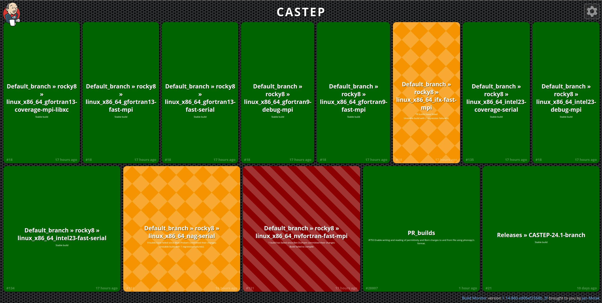
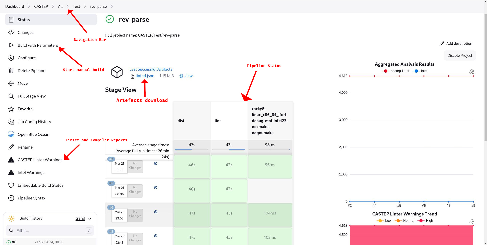
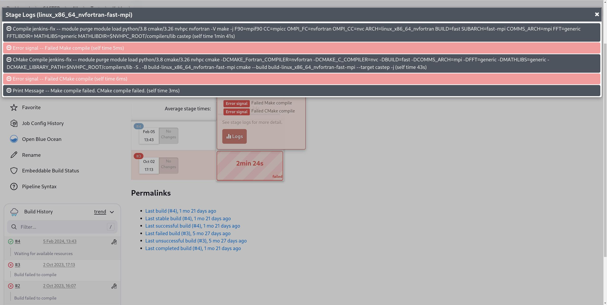
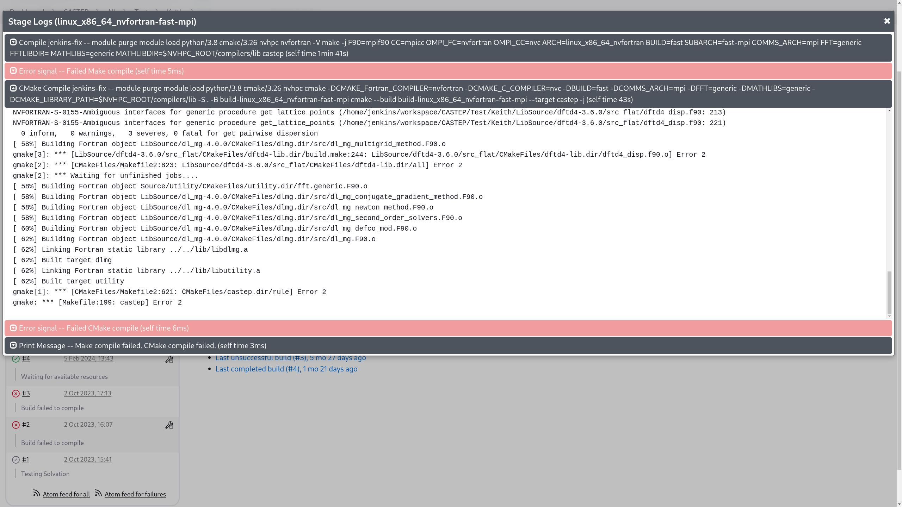
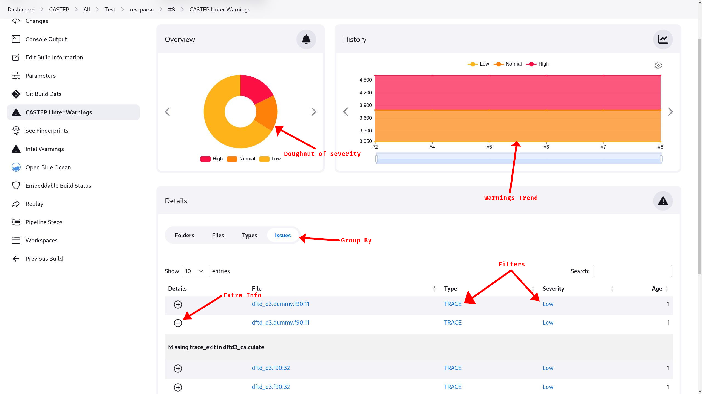
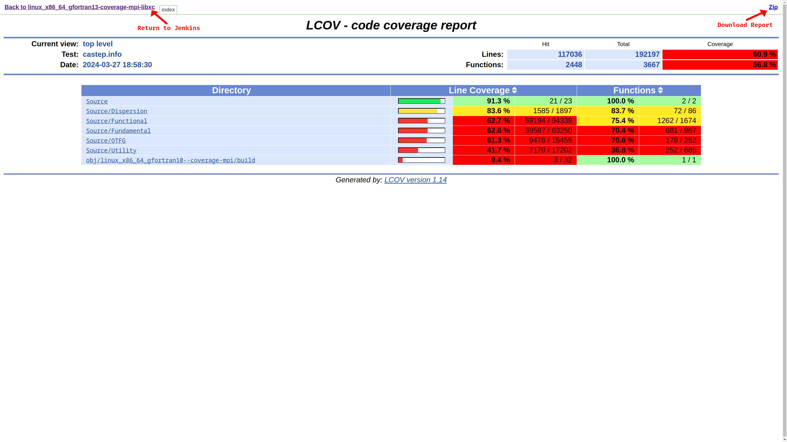

CI测试系统
概述
通知
本文件假设您同时拥有 CASTEP 源代码和 ANVIL CI 系统的访问权限。
CASTEP 的持续集成（CI）系统分为 3 个阶段：
- 快速响应（BitBucket）
- 一个简短的测试集，在每次创建或推送拉取请求时都会运行。
- CASTEP 测试（Jenkins）
- 一组更全面的测试在创建或推送拉取请求时运行。
- CASTEP 默认测试（Jenkins）
- 一组在默认分支或发布分支合并时自动运行的测试。
CASTEP 的主要持续集成（CI）系统是一个 詹金斯 实例在……上运行 ANVIL 服务。
主 CASTEP Jenkins 实例位于：
https://anvil.softeng-support.ac.uk/jenkins/job/CASTEP/view/all/
通过 Jenkins Dashboard 将会带你进入 瀑布图 首页。
说明
ANVIL 服务是一个由STFC云平台管理的系统，注册请求将根据具体情况由他们酌情考虑，且不受CASTEP团队的控制。
个人工作流
为了开发测试的目的，您可以申请一个个人流水线，以便能够快速在主 CASTEP 测试所涉及的各种环境中进行测试。
这例如所需。 修改的 Jenkinsfile
访问此流程需要一个 ANVIL 账户以及合理的申请理由。
在 Jenkins 中导航
瀑布图
Jenkins 控制台的首页是一个瀑布图，它快速展示了最近的计算结果。 default, Release 并且 PR_builds 管道。
提示
为了启用包括文字大小调整和色盲模式在内的可访问性选项，请选择右上角的齿轮图标。

颜色代表管道的状态：
| 颜色 | 色盲 | 含义 |
|---|---|---|
| 绿色 | 平的 | 上一次运行成功。 |
| 橙色 | 金刚石 | 上一次运行失败了测试，但成功构建。 |
| 红色 | 对角条纹 | 上一次运行未能成功构建一个或多个管道。 |
说明
管道下方的文本描述了该管道故障持续的时间以及故障的程度。
点击任一管道名称将带您进入该管道的管道菜单。
管道菜单
管道菜单是任意单个管道状态的显示界面。它包含多个重要的显示内容和按钮。
下图突出了这些内容。

说明
侧边栏是动态的，对于特定的管道，您可用的选项可能与上方图片中的选项不一致。例如，该管道尚未生成覆盖率报告。
导航栏
导航栏允许您查看其他流水线，每个名称都是指向该Jenkins部分/层级的链接。
注意
“CASTEP”级别的按钮将带您进入Waterfall页面。若要到达顶层的CASTEP仪表板，请选择“全部”。
当查看时 语法检查和警告报告 导航栏还将按应用顺序显示当前生效的筛选条件，并提供移除这些筛选条件的方式。
管道状态
管道状态显示了之前的运行状态。可以单击任意阶段，然后查看日志以获取问题的详细步骤分解。任何失败的步骤将显示为粉色，而不是通常的灰色。

然后可以点击标签来展开该步骤的控制台输出。通常在以下情况下：
-
- 构建
- 这将是
Compile步骤 以上 断裂。
-
- 测试
- 这将是
Diff步骤 如下 断裂。

说明
点击步骤名称将带您进入一个不同页面，该页面会以全页显示该步骤的输出内容。
提示
选项卡在选择另一个时会折叠。
报告
在 Jenkins 的一次运行过程中，可能会生成多个“报告”，并在生成这些报告的流水线侧边栏中提供这些报告。
语法检查和编译器警告
构建完成后，Jenkins 将收集构建过程中产生的编译器警告，以及如果运行了静态检查阶段，则生成的静态分析问题，并将这些内容汇总为一个可通过侧边栏访问的报告。
注意
警告收集将采用首次构建时使用以下任一编译器所产生的警告集合：
- gfortran
- ifort
- nag
这意味着如果每个编译器的第一个项目为 builds_to_run （见 手动参数化运行) 不是一个 opt=debug 构建时，你可能会错过大多数警告。

报告允许选择并过滤问题类型：
-
它们可以通过点击主表格上方的相应按钮进行分组和排序。
-
严重性的甜甜圈实际上是一个可点击的过滤器，用于筛选该级别的警告！
-
该
+在“问题”中的“按组分类”模式下，问题左侧的图标允许你展开该问题以获取更多详情。 -
从“文件”列中选择文件会显示注释源代码，然而，请参见下面的问题。
已知问题
由于CASTEP源文件相对较大，在选择时会遇到问题。 file:line 链接将带您跳转到问题发生点的源代码注释版本，但渲染引擎往往会拖慢机器性能，导致浏览器难以加载甚至无法加载该注释文件。
测试覆盖率报告
每当一个 coverage 构建并运行（即使用either的） ifort 或者 gfortran 编译器和 opt=coverage)，Jenkins 将汇总覆盖率报告并将其在侧边栏中提供访问。

已知问题
由于 ANVIL 当前的安全设置， ifort 报告无法通过此视图查看，必须下载后才能查看。
FORD API 文档
作为完整构建的一部分 default 分支跟随合并时，Jenkins 将触发一个 FORD 构建 API 文档。
本构建的结果可从侧边栏获取。 CASTEP > All > Default_branch > docs-trigger 管道。
构建制品
在 Jenkins 运行过程中，会保存各种文件，使其可供下载。
目前保存下来的文物有：
- linting 报告
- 失败的测试数据
- 覆盖报告
- FORD 文档说明
部分插件可在上述上一运行任务上方的管道菜单顶部下载。
在交互式报告（覆盖率和FORD）中打开时，右上角会显示下载按钮。
Jenkins 管道
课程中CI运行的测试通过以下方式控制 Jenkinsfile 在 CASTEP 文件夹的根目录下。
默认构建运行
一般来说，默认配置集在 rocky8 使用：
- 英特尔 23
- 如果 x 24
- GCC 13
- GCC 9
- NAG 7.1
- NVFortran 23.7
不同组合的 arch, comms 以及外部库试图覆盖各种可能的使用场景。
说明
全部 default 或者手动编译也会运行对源代码分发包正确性和完整性的测试 GNU Make 和 CMake dist 目标。
默认构建密钥
截至撰写之时，默认 构建密钥 是：
rocky8;linux_x86_64_ifort;debug;mpi#intel23
rocky8;linux_x86_64_gfortran;debug;mpi#gcc9
rocky8;linux_x86_64_nag;debug;serial
rocky8;linux_x86_64_gfortran10;coverage;mpi#gcc13-libxc
rocky8;linux_x86_64_ifort;coverage;serial#intel23-nocmake
rocky8;linux_x86_64_ifort;fast;serial#intel23-nocmake
rocky8;linux_x86_64_gfortran;fast;mpi#gcc9-nocmake
rocky8;linux_x86_64_gfortran10;fast;mpi#gcc13-nocmake
rocky8;linux_x86_64_gfortran10;fast;serial#gcc13-nocmake
rocky8;linux_x86_64_nvfortran;fast;mpi#nogrimmed4
rocky8;linux_x86_64_ifx;fast;mpi#ifx24-nocmake
PR构建运行
当打开一个 PR 时，BitBucket 会触发一组有限的 Jenkins 测试。
这些构建仅运行 quick 测试的一个子集。
说明
如果一个PR只影响未被测试的CASTEP部分，例如文档或独立工具，则应有 [skiptest] 或者 [skipanvil] 在PR标题中。
如果一个PR尚未准备好进行测试，它应该有 [wip] 或者 [draft] 在PR标题中。
这些设置将防止PR触发Jenkins构建从而节省资源。
默认PR构建
这些构建版本（在本文撰写时）是：
rocky8;linux_x86_64_nag;intermediate;serial#nocmake
rocky8;linux_x86_64_gfortran10;fast;mpi#gcc13-fftw-nocmake
rocky8;linux_x86_64_ifort;intermediate;serial#intel23-nocmake
rocky8;linux_x86_64_nvfortran;fast;serial#nogrimmed4-nognumake
然而，这些内容可能会发生变化。
参数化运行手册
如果您希望从特定配置或测试子集开始运行，可以手动启动参数化运行。
从 Jenkins 接口选择要运行构建的管道（参见 个人管道) 并选择 Build with
Parameters这允许用户手动指定要使用的组件。
参数
参数如下：
| 参数 | 含义 | 默认值 |
|---|---|---|
repo_method |
定义获取仓库的方法。 不需要更改。 |
https |
repo_host |
如果外部托管，则仓库的 URL。 不需要更改。 |
bitbucket.org |
repo_path |
工作区和仓库的 URL 路径。 1 | castep/castep |
branch |
分支用于构建和测试。 2 | default |
builds_to_run |
构建为运行列表 构建密钥. | 参见： 默认构建列表 |
tests_to_run |
要运行的测试列表。 | 所有例外情况 quick |
baseURL |
用于发布消息的 Slack 链接。 N.B. 设为空字符串则不发送消息。 |
https://corecastepdevelopers.slack.com/services/hooks/ |
lint |
运行或跳过检查阶段。 | true |
注意
在测试运行期间推送分支可能导致Jenkins获取最新更改并针对新内容运行部分测试。 HEAD
构建密钥
Jenkins 的测试可以在多种不同的系统配置上运行。为了选择特定的配置，必须指定标识该配置的关键参数。
这些键的格式为：
哪里 agent 是以下之一：
rocky8-- Rocky Linux 8rocky8-gpu-- 支持GPU的Rocky Linux 8rocky9-- 罗基Linux 9icdpacewin-- Windows
并且 arch, opt 并且 comms 对应于 CASTEP 构建系统变量 ARCH, OPT 并且 COMMS. comment 用于区分其他相似变体，并唯一标识某一特定配置，以及对构建过程应用修改（见） 注释标签).
然而需要注意的是，某些计算节点上仅提供特定变量的组合。要获得完整的可用组合列表，必须查阅相关资料。 Jenkinsfile 本身，因为这份列表经常被更新和修改。
注释标签
构建密钥的评论部分允许在常规构建标志之外对配置进行修改。
这些是以以下方式添加的（添加） nocmake):
- 如果基础构建没有注释
rocky8;linux_x86_64_nag;debug;serial#nocmake- 如果它确实如此
rocky8;linux_x86_64_ifort;debug;mpi#intel23-nocmake- 多个注释标签使用
- rocky8;linux_x86_64_ifort;debug;mpi#intel23-nocmake-nognumake
注释标签
目前可用的标签有：
| 标签 | 影响 |
|---|---|
targetHost |
编译针对 VM 架构的优化版 CASTEP |
targetPortable |
编译可移植的 CASTEP |
libxc |
将 CASTEP 与 LibXC 链接起来 |
nogrimmed3 |
无法编译（或测试）D3 SEDC |
nogrimmed4 |
无法编译（或测试）D4 SEDC |
nodlmg |
无法编译（或测试）DLMG库 |
debug |
启用详细构建阶段 |
nocmake |
禁用 CMake 构建阶段和测试 |
nognumake |
禁用 GNU Make 构建阶段和测试，若未禁用则在 CMake 构建上运行指定的测试套件 |
BitBucket 管道
除了主要的 Jenkins 测试之外，还有一个由短而快速的测试子集，在每次提交到 BitBucket 时都会运行，以迅速验证功能。
BitBucket 的管道通过以下方式管理 bitbucket-pipelines.yml 在 CASTEP 文件夹的根目录下。
它们目前运行：
lint-- 运行 castep校验工具 关于源。build-castep-- Adebug使用包含 LibXC 的 CASTEP 编译build-castep-python--debug构建 CASTEP 的 Python 绑定test-castep-- CASTEP 程序的运行记录quick测试套件。test-python-- CASTEP 程序的运行记录python测试套件。
所有这些都在一个编译了的Linux系统图像上进行 gfortran 以及静态 LAPACK 并且 BLAS 库文件。它们不应被视为全面的。
修改 Jenkinsfile
添加新配置
为了添加一个新的组合（参见 修改)，有必要在其中定义它 matrix 变量在……中 Jenkinsfile。此 matrix 是一个 Groovy Map 一个将特定构型转换为 Map 所需额外参数以执行构建。
i.e.
构建列表的参数说明如下在 get_buildconfig_from_map 函数。
构建参数
目前的构建参数为：
| 参数 | 说明 | 默认值 |
|---|---|---|
modules |
在Linux代理上需要加载的模块1 | "" |
fft |
作为 CASTEP 构建系统变量传递 FFT |
"generic" |
math_libs |
作为 CASTEP 构建系统变量传递 MATHLIBS |
"generic" |
fft_lib_dir |
作为 CASTEP 构建系统变量传递 FFTLIBDIR |
"" |
math_lib_dir |
作为 CASTEP 构建系统变量传递 MATHLIBDIR |
"" |
extra_args |
额外直接传递给 GNU make 构建系统的命令行参数。 | "" |
cmake_extra_args |
额外直接传递给 CMake 构建系统的命令行参数。 | "" |
1 可用模块列表可在 ANVIL 系统的以下位置找到： Examples
-> List of available software.
添加新的注释标签
注释标签在的管理方式为 get_buildconfig_from_map 子例程。它们被从矩阵键中提取出来，因此可以应用于任何特定的构建配置。
在该子程序中有一个闭合（closure）process_buildconfig_arg) 负责处理此过程，其签名是：
comment_key- 注释标签用于处理
make_arg- 额外传递给 GNU Make 构建的命令行参数
cmake_arg- 额外传递给 CMake 构建的命令行参数
此例程检查是否存在注释标签，从构建查找键中移除该标签，并添加 make_arg 并且 cmake_arg 到它们各自对应的参数列表中。
说明
在不需要添加或修改编译参数的情况下，将它们设置为空字符串是合理的（""。注释标签由 config[0] 可以检查是否存在该键。
向 Jenkinsfile 提交修改
任何对 Jenkinsfile 进行修改的 PR 必须附带以下内容：
- 详细说明变更的原因以及变更的具体内容
- A 自定义流水线 运行演示修改后的流水线在所有预期使用场景下的应用，可能包括：
- 常用每种代理（目前
rocky8,icdpacewin,rocky8-gpu) - 一种广泛使用的构建配置的重要选择
- 包含至少一个带注释的 WITH，以及一个不带注释的 WITH。
- 常见标签的组合
- 所有测试（包括
quick哪一项不是默认设置）
- 常用每种代理（目前
说明
为了开发和测试一个自定义 Jenkinsfile，需要向其中一个 Jenkins 管理员提出请求以重新配置 你的流水线 指向相关仓库，才能运行自定义功能 Jenkinsfile.